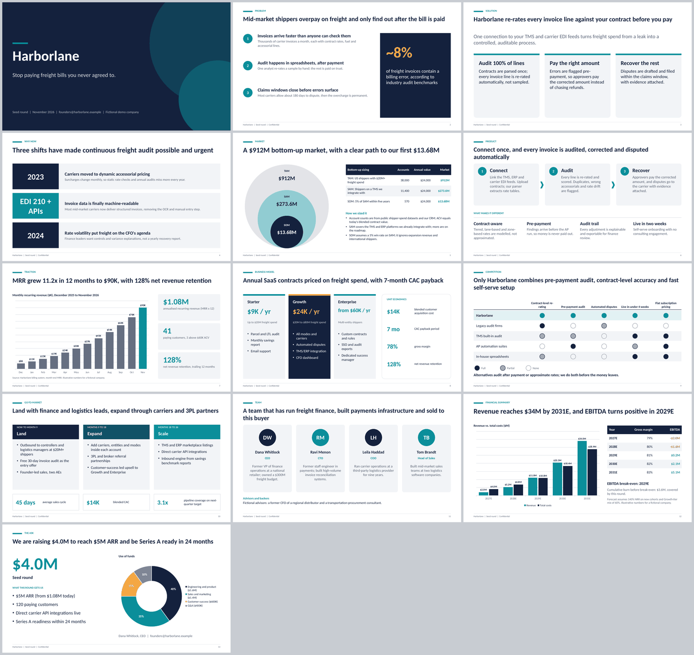
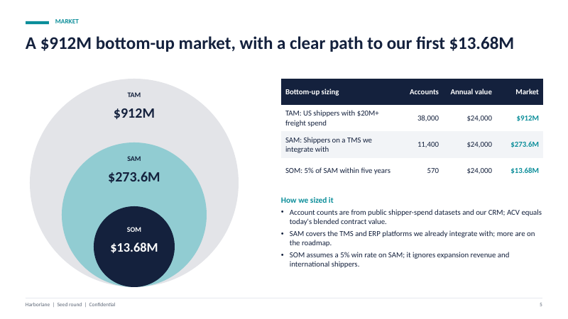
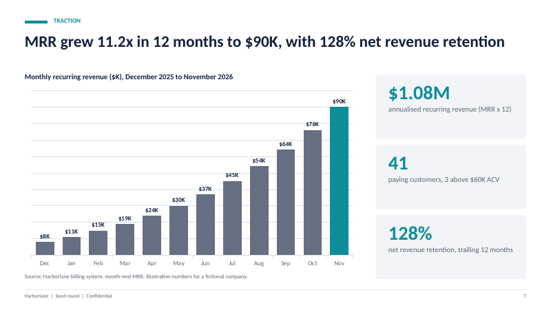

How to make a pitch deck with Claude Code
A practical walkthrough for getting a real, editable PowerPoint pitch deck out of Claude Code, with charts you can click into and change. Works with the free skill or with a plain prompt.
Short version: Claude Code can write a real .pptx by running a Python script (python-pptx) that draws slides and native chart objects. The decks that turn out well start from a one-page brief of facts, use a fixed slide order, and get checked by a script and by your own eyes. Expect a strong first draft, not a finished raise.

What you are actually asking Claude Code to do
Claude Code does not have a slide editor. When you ask for a deck it writes and runs code, usually with the python-pptx library, and saves a file. That is good news for two reasons. The output is a normal PowerPoint file you can open in PowerPoint, Keynote or Google Slides. And charts can be real chart objects with a data sheet behind them, so you can right-click a bar chart and choose Edit Data, instead of getting a picture of a chart.
It is also the source of the main risks: the model cannot see the slide while it writes code, so text can overflow a box, and nothing forces the numbers on slide 5 to match the numbers on slide 12. Most of this guide is about closing those two gaps.
Step 1: Write a one-page brief before you prompt
The quality of the deck depends more on your inputs than on the prompt. Put these facts in a single text or markdown file:
- Company name, one-line pitch, round size, audience (seed funds, angels, a strategic).
- The problem, in the customer’s words, with one hard fact you can source.
- Traction as a series: monthly revenue or users for the last 12 months, customer count, retention.
- Market inputs for a bottom-up size: how many target accounts exist, how many you can realistically serve, and your average price.
- Pricing tiers, unit economics you can defend, 3 to 5 named competitors.
- Team: names and one relevant line each.
- A five-year revenue and cost forecast, and the use of funds as percentages that add to 100.
If you do not know something, write [TBD] rather than guessing. A visible placeholder is easy to find later; a plausible invented number is not. The free skill ships a sample brief (a fictional freight-audit company called Harborlane) in skills/investor-pitch-deck/examples/input.md that shows the level of detail that works.
Step 2: Give it a fixed narrative
Do not ask for “a pitch deck” and hope. Specify the order. A widely used seed or Series A order, and the one the free skill follows, is:
- Title
- Problem
- Solution
- Why now
- Market (TAM, SAM, SOM with the calculation shown)
- Product
- Traction
- Business model and unit economics
- Competition
- Go-to-market
- Team
- Financial summary
- The ask and use of funds
Ask for slide titles that state the point (“Monthly revenue grew 11x in 12 months”) rather than labels (“Traction”). Investors skim titles; if the titles alone tell the story, the deck works.
Step 3: Get a skill that can build pptx files
You can do this with a plain prompt, but a skill gives the agent tested code and a checklist instead of improvising each time. Options include Anthropic’s own public skills repository (which has document skills) and the free investor-pitch-deck skill from Boardroom Skills. To install the free one as a Claude Code plugin:
/plugin marketplace add boardroomskills/boardroom-skills
/plugin install boardroom-skills@boardroomOr copy the folder by hand, which works for any agent that reads SKILL.md:
git clone https://github.com/boardroomskills/boardroom-skills.git
cp -r boardroom-skills/skills/investor-pitch-deck ~/.claude/skills/
pip install -r ~/.claude/skills/investor-pitch-deck/requirements.txtRestart Claude Code so it re-scans its skills. For more on where skills live in each agent, see What are Claude Agent Skills and how to install them.
Step 4: Prompt, then answer its questions
Start with something like this:
Build a 13-slide seed pitch deck from brief.md as a .pptx with native
editable charts. Follow the standard narrative order. Do not invent any
number that is not in the brief; use [TBD] placeholders and list them
at the end. Run the QA script and tell me what it found.A well-written skill makes the agent ask for anything missing before it builds. Answer those questions, or leave the placeholders. Resist the urge to say “just make something up for now”; that is how invented traction ends up in front of an investor.
Step 5: Let the numbers be computed once
The most useful design choice in a deck script is to pass inputs, not results. If you give the script accounts and average price, it can compute the market size and reuse it on every slide, and it can refuse to build when TAM is smaller than SAM. The same goes for use of funds: give percentages and a total, and let the script derive the dollar amounts and check that the percentages sum to 100. Where you do this by hand, you will eventually have a slide that says $4.0M and another that says $4M with a different split.


Step 6: Build, then run the checks
With the free skill, the build is two commands: write a JSON content file based on the example, then run the builder.
python scripts/build_deck.py --spec deck.json --out pitch.pptx --theme boardroom
python scripts/qa_pptx.py pitch.pptx --min-slides 12 --max-slides 14 --min-charts 3The builder measures text with real font metrics, shrinks it to a floor and then stops with an error rather than letting it overflow. The QA script re-opens the saved file and checks that shapes are inside the slide, text does not run into the footer, no placeholders remain, no fonts are tiny and the native chart count is what you expect.
If you are not using a skill, you can still ask for the same checks in your prompt. Ask Claude Code to re-open the file with python-pptx after saving it, loop over every shape, and report any that extend past the slide edge, any text frame with more than a set number of lines, and any text containing TBD or lorem.
Step 7: Render it and look
Scripts cannot judge taste. Convert to images and look at each slide. With LibreOffice and poppler installed:
soffice --headless --convert-to pdf pitch.pptx
pdftoppm -png -r 60 pitch.pdf slideCheck for crowded text, labels colliding in charts, and a chart whose latest value disagrees with the number in the title. Note that LibreOffice substitutes fonts, so spacing in real PowerPoint can differ slightly. Open the file in PowerPoint once before you send it.
What to edit by hand
- Brand. Generated decks use a few fixed themes and system fonts. Add your logo and adjust colours yourself, or edit the theme file.
- Screenshots of your product. The agent has no access to them. Paste them in.
- The story. The agent organises what you gave it. It cannot know which of your three customers is the reference investors will call. You decide the emphasis.
- Claims. Every statistic, competitor claim and market number needs a source you can defend in the room.
Honest limits
Code-generated decks look clean and consistent but plain. They are not a substitute for a designer if design is part of your pitch. Animations, custom master slides and heavy imagery are outside what a script like this does well. And no tool makes a weak business case strong; it only makes a weak case look tidy. For a wider comparison of approaches, read Claude Code skills for PowerPoint: what works, what doesn’t. If you later need a board update rather than a raise, see the board deck and QBR template guide.
Free download: the pitch deck template (PPTX), 13 slides with editable charts.
Disclosure: I make and sell Boardroom Skills. Nothing here is legal, financial or investment advice. Company names and numbers in screenshots are fictional.